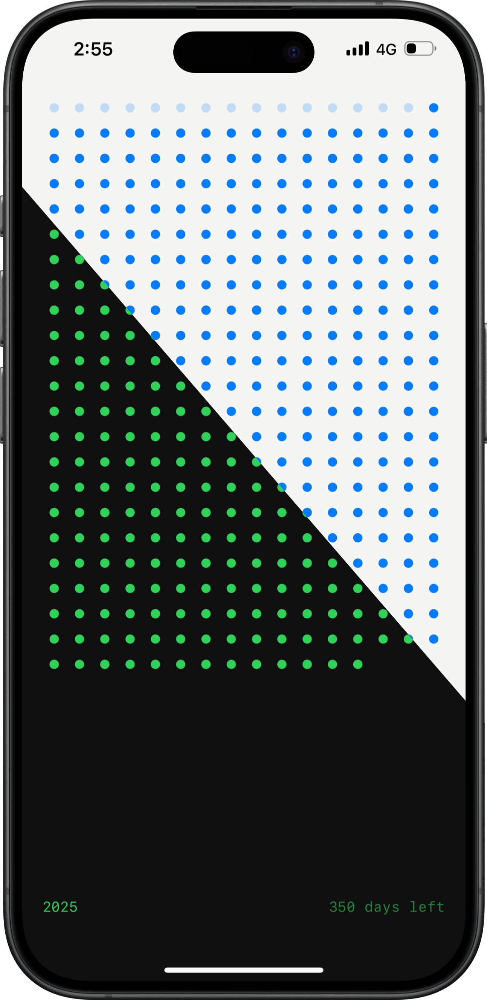

Understand Time Through Beautiful Visualization
Left transforms how you perceive time through elegant dot visualizations. Each dot represents a unit of time - whether it's days left in the month, weeks in the year, or a broader perspective of your life's journey. This unique approach helps you maintain perspective and make the most of every moment.
With powerful widgets that seamlessly integrate into your device, Left provides instant awareness of time remaining at a glance. Our minimalist design philosophy ensures that this profound information is presented in a clear, unobtrusive way that fits naturally into your daily life.
Make It Yours
Personalize your experience with six carefully selected colors for the dots and text: white, blue, green, orange, yellow, and pink. Combined with both dark and light backgrounds, you can create the perfect visualization that resonates with your style.
Multiple Time Perspectives
Year Progress
Track your year's journey with a grid of dots representing each week. Watch as time progresses and stay mindful of your yearly goals.
Life Journey
Gain a broader perspective of your life's path. Each dot represents a significant marker in your journey, helping you embrace life's precious moments.
Month Overview
Stay focused on your monthly progress with daily markers. Perfect for tracking short-term goals and maintaining monthly momentum.
Key Features
- Beautiful dot visualization for remaining time
- Six distinct color themes (white, blue, green, orange, yellow, pink)
- Dark and light mode support
- Multiple time perspectives (month, year, life)
- Customizable widgets for instant awareness
- Clean, minimalist interface
- Personal milestone tracking
- Private and secure time tracking
Privacy Policy
Last updated: December 27, 2024
Introduction
Cristian Rus ("we," "us," or "our") operates the Left mobile application (the "Service"). This page informs you of our policies regarding the collection, use, and disclosure of personal data when you use our Service.
Data Collection and Use
We do not collect any personal information from our users. Left operates entirely on your device, using only the basic information you provide for visualization purposes. Your personal milestones and time calculations remain private and are stored only on your device.
Security
Your privacy is paramount. Left functions as a standalone application, performing all calculations locally on your device. We never transmit or store your personal information on external servers.
Contact Us
If you have any questions about this Privacy Policy, please contact us:
Cristian RusAuckland, New Zealand
Email: cristianrus@hey.com